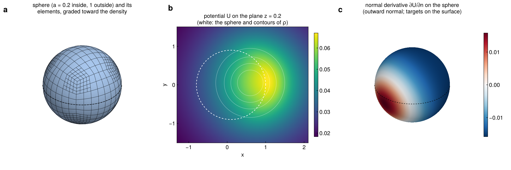
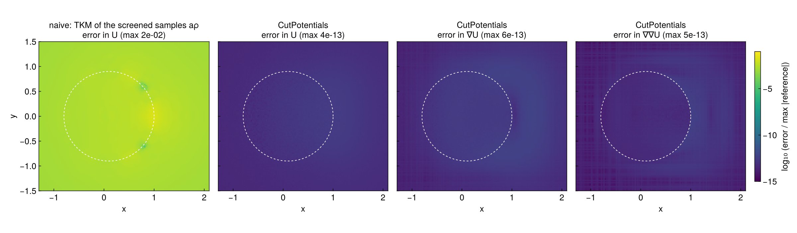
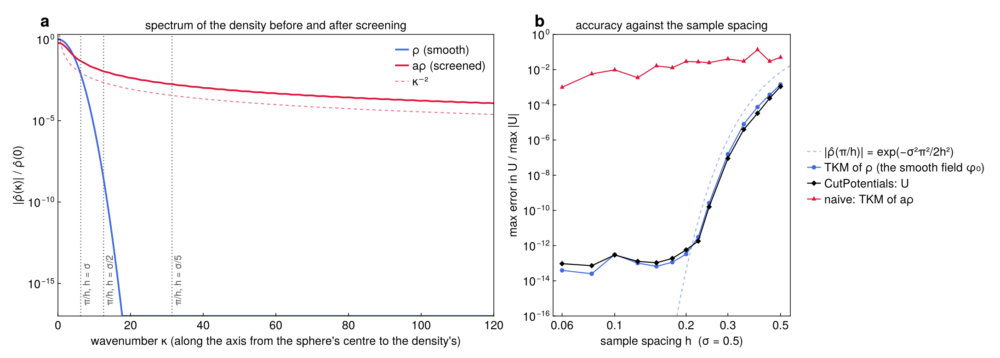
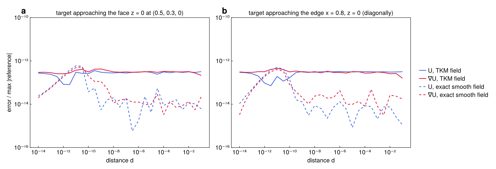

Examples
The figures on this page come from docs/figures/make_figures.jl. The references are independent of the method: heat-kernel formulas for a Gaussian truncated to a ball or a box (as in the tests), differentiated with ForwardDiff.
A density straddling a sphere
The density is a Gaussian, $\sigma = 0.5$, centred at $(0.6, 0.05, 0.1)$. It is sampled on a cubic lattice of spacing $h = 0.1$ covering $\pm 8\sigma$. The coefficient is $a = 0.2$ inside the ball of radius $0.9$ about $(0.1, 0, 0.2)$, and $a_0 = 1$ outside, so the density straddles the interface.
src = VolumeSource(x -> ρ(x), origin, 0.1 * I(3), (n, n, n))
field = SmoothField(src; tol = 1e-12)
itf = [sphere_interface((0.1, 0.0, 0.2), 0.9, 0.2 - 1.0)] # δa = 0.2 − 1
sq = SurfaceQuadrature(itf; support = density_support(src), L0 = 0.5)
r = evaluate(CutPlan(sq, targets; a0 = 1.0, grad = true), field)- a. The sphere's Gauss–Legendre elements, refined toward the density on the $+x$ side.
- b. $U$ on the plane $z = 0.2$. The coefficient is small inside the sphere, so the potential peaks just outside it, on the side where most of the unscreened density lies.
- c. The normal derivative $\partial U / \partial n$ at targets exactly on the sphere. $U$ and $\nabla U$ are continuous across the interface, so no side has to be chosen.

Accuracy, against the naive approach
The naive approach evaluates the screened samples $a\rho$ directly with the same smooth-field evaluator (TKM). Its error is $10^{-2}$. CutPotentials' errors in $U$, $\nabla U$ and $\nabla\nabla U$ are $4 \times 10^{-13}$, $6 \times 10^{-13}$ and $5 \times 10^{-13}$. They are uniform across the interface; the dashed circle marks it.

When the smooth-field evaluation fails
Everything CutPotentials computes in the volume is a TKM evaluation of the smooth $\rho$. Its accuracy is set by how much of $\hat\rho$ the samples miss, and not by tol:
- Panel a: before and after screening. Along the axis through the sphere's centre and the density's, $\hat\rho$ is a Gaussian. It drops below $10^{-16}$ by $\kappa \approx 18$. The screened $a\rho$ jumps across the sphere, and its spectrum decays only like $\kappa^{-2}$. The samples resolve wavenumbers up to $\pi/h$, the dotted lines, and what lies beyond is lost.
- Panel b: error against the spacing.
- Naive TKM of $a\rho$. At $\pi/h$ the screened spectrum is still $10^{-2}$ to $10^{-3}$. Its error stays there at every spacing.
- TKM of $\rho$ and CutPotentials' $U$. Both track $|\hat\rho(\pi/h)| = e^{-\sigma^2\pi^2/2h^2}$. They reach the $10^{-13}$ floor once $h \lesssim \sigma/2.5$.
- Coarse samples. At $h = \sigma/2$ the error is $10^{-10}$. At $h = \sigma$ it is $10^{-3}$, the same as the naive error.
The surface corrections cannot repair a density that its samples do not resolve. They remove only the error that screening adds.
The sample box. The density must also decay inside the sample box: the samples omit its tail beyond it. With a box of $\pm 6\sigma$ the smooth field's error is $6 \times 10^{-10}$, with $\pm 7\sigma$ it is $6 \times 10^{-13}$, and with $\pm 8\sigma$ about $10^{-13}$. The tests' skewed lattice cuts the Gaussian at about $7\sigma$ in one corner, which is why they measure $10^{-11}$.

Targets approaching an interface
Here one box has $a = 1/4$ inside and $1$ outside. A target approaches a face (a) and an edge (b) of it, from $d = 10^{-1}$ down to $10^{-14}$.
- No special treatment. There is no snapping and no special case for nearby targets. SCTL's corrections handle the near-singular and singular surface integrals. The double layers have densities that vanish at the target.
- Solid lines. With the TKM field the error is flat, at the smooth field's $3 \times 10^{-13}$.
- Dashed lines. With the exact smooth fields only the surface part remains. It stays at $10^{-14}$ to $10^{-13}$ at every distance, even at the edge.
